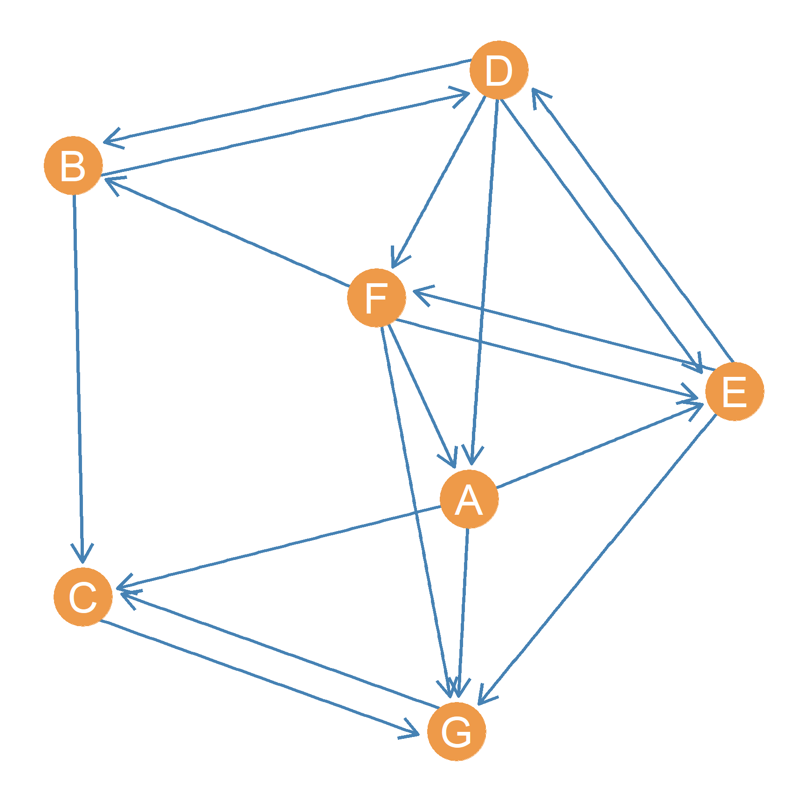
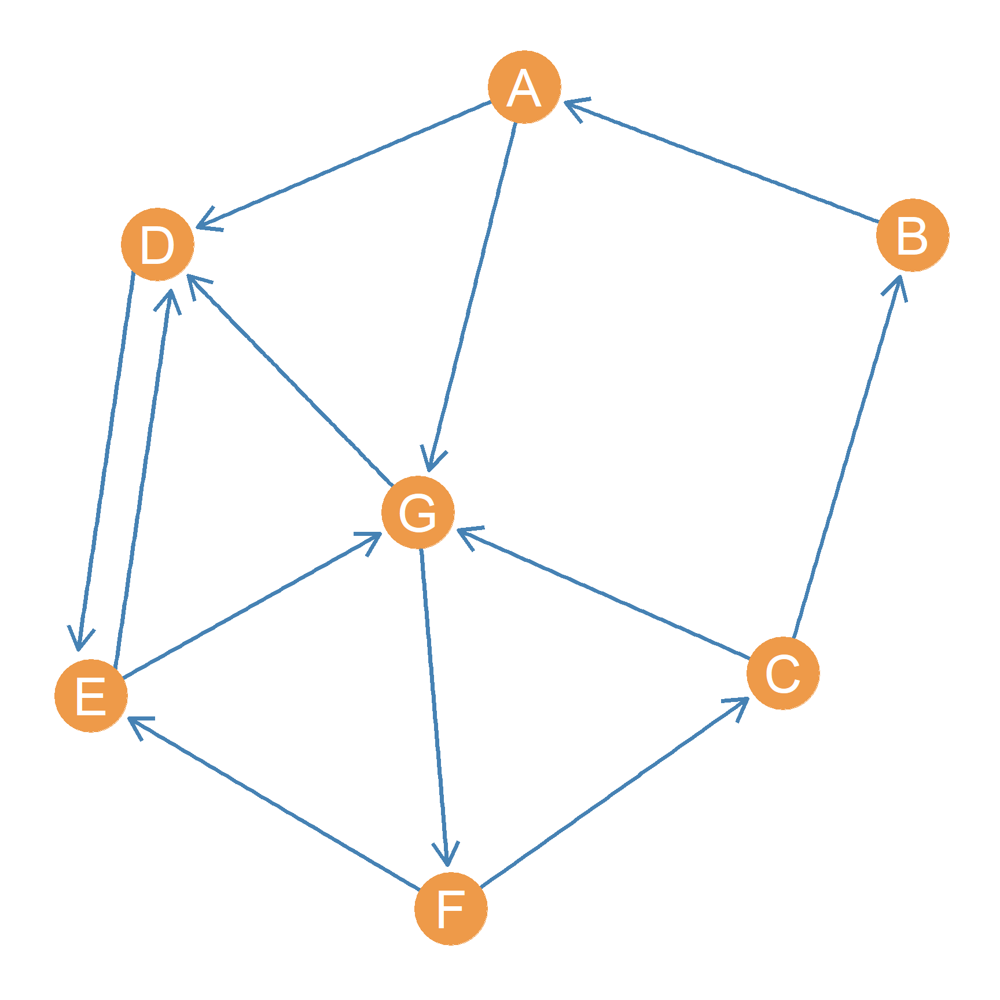
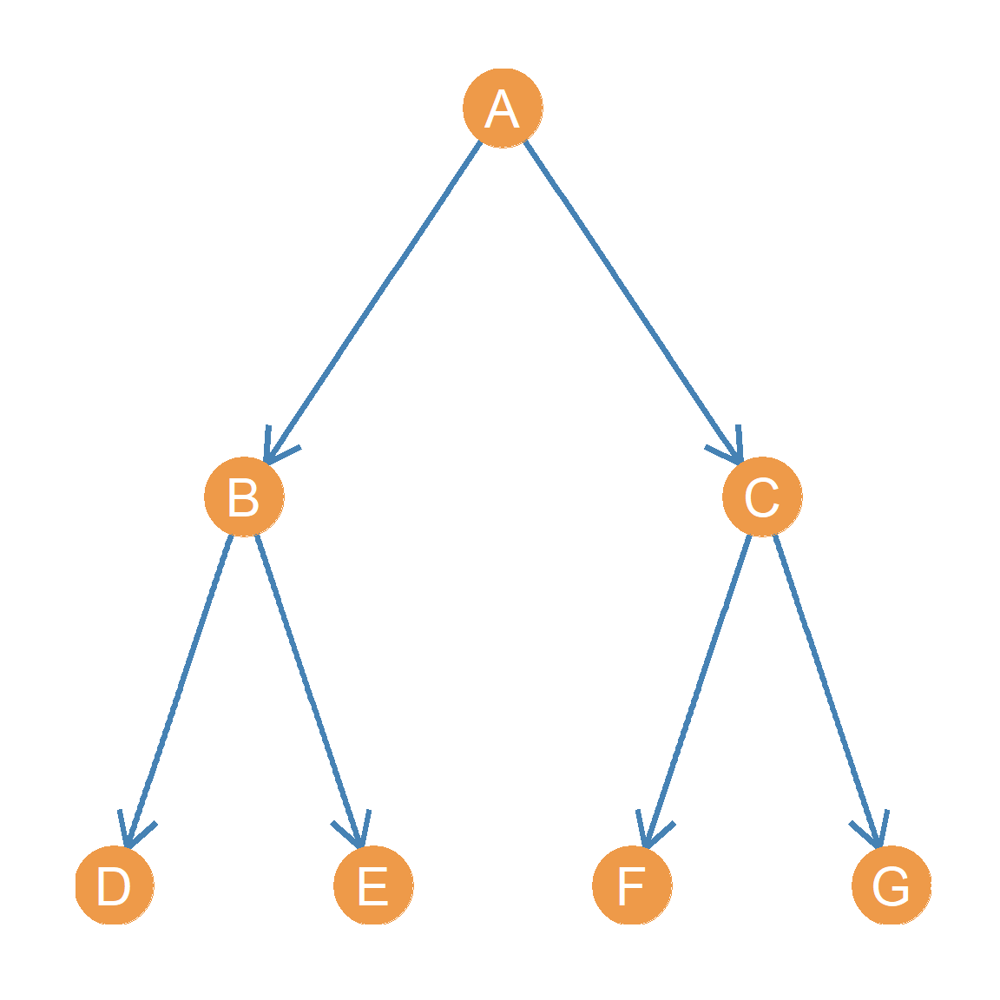
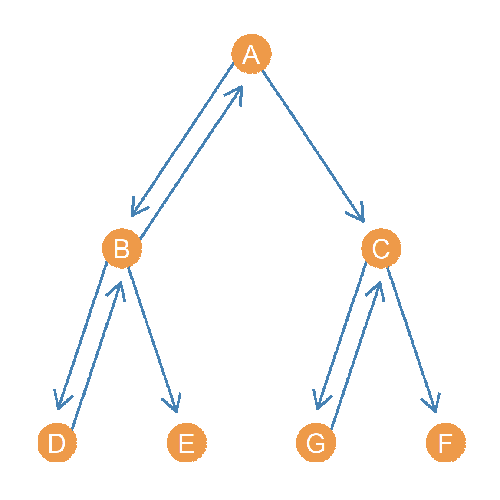
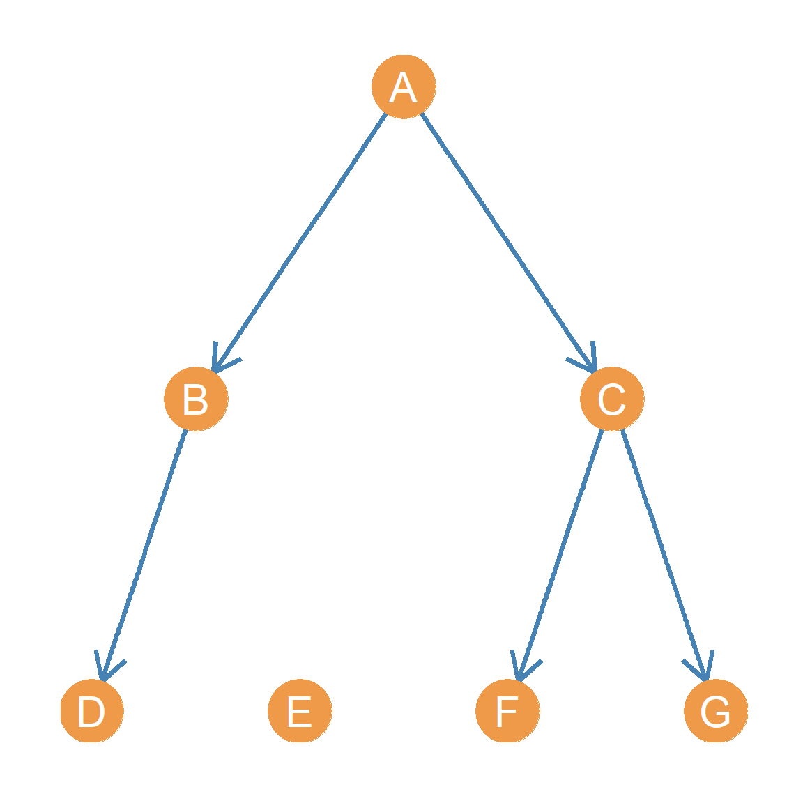
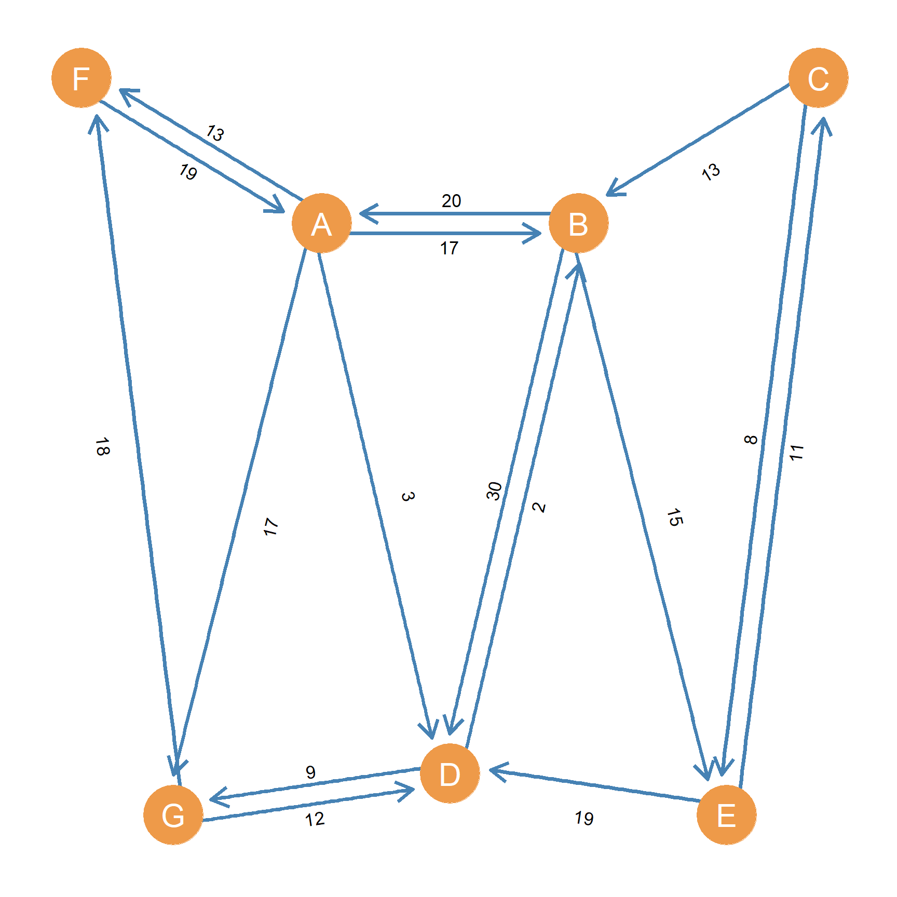

10 Directed Graph Metrics
There are a number of graph metrics that makes the most sense to compute in directed graphs. In this lesson, we discuss the most important ones.
10.1 The Dyad Census
When examining the structure of a social network composed of asymmetric edges, and represented as a directed graph, we may be interested in counting how many dyads of each type (mutual, asymmetric, and null) exist in the whole graph. This graph metric is called the dyad census. For instance, if we were to perform the dyad census on the graph shown in Figure fig-direx1 we would end up with:
| Mutual | Asymmetric | Null |
|---|---|---|
| 4 | 10 | 7 |
Table 10.1: Dyad census of a directed graph.
The dyad census tells us that out of all the connected dyads in Figure fig-direx1, four of them are mutual: \(\{BD, CG, DE, FE\}\), and ten of them are asymmetric: \(\{AC, AE, BC, DF, EG, DF, EG, FA, FB, FG\}\).
The number of mutual dyads in a directed graph is represented by the symbol \(L^\leftrightarrow\). The number of asymmetric dyads, on the other hand is represented by the symbol \(L^\rightarrow\). Note that the cardinality of the edge set \(|E|\) (a.k.a. the total number of edges) in a directed graph is therefore:
\[ |E| = 2L^\leftrightarrow + L^\rightarrow \]
Remember, we multiply the number of mutual dyads by two, because each mutual dyad is composed of two directed edges!
In the same way, the total number of connected dyads (\(L\)) in a directed graph is:
\[ L = L^\leftrightarrow + L^\rightarrow \]
10.1.1 Advanced topic: Mechanics of the dyad census
Where the numbers in Table tbl-dyad-census) come from? Well, it turns out that they can be readily computed from the asymmetric adjacency matrix (\(A\))of the corresponding directed graph. The one corresponding to Figure fig-direx1 is shown as Table tbl-adj1.
| A | B | C | D | E | F | G | |
|---|---|---|---|---|---|---|---|
| A | – | 0 | 1 | 0 | 1 | 0 | 1 |
| B | 0 | – | 1 | 1 | 0 | 0 | 0 |
| C | 0 | 0 | – | 0 | 0 | 0 | 1 |
| D | 1 | 1 | 0 | – | 1 | 1 | 0 |
| E | 0 | 0 | 0 | 1 | – | 1 | 1 |
| F | 1 | 1 | 0 | 0 | 1 | – | 1 |
| G | 0 | 0 | 1 | 0 | 0 | 0 | – |
Table 10.2: Asymmetric adjancency matrix of a directed graph.
To find out the number of mutual dyads (\(L^\leftrightarrow\)) all we need to do is cycle through the lower triangle of the matrix (cells below the main diagonal), and compute the product of that cell and the corresponding symmetric cell on the upper triangle (cells above the main diagonal).1
In matrix format:
\[ L^\leftrightarrow = \sum_{i>j} a_{ij}a_{ji} \tag{10.1}\]
Where the subscript below \(\sum\) says to sum through the cells where the row subscript i is always larger than the column subscript j (lower triangle). The product of \(a_{ij}a_{ji}\) will only equals one if the edges go in both directions \(a_{ij} = 1, a_{ji} = 1\), and the sum will equal the number of mutual dyads \(L^\leftrightarrow\).
Once we have \(L^\leftrightarrow\) we can figure out \(L^\rightarrow\), the number of asymmetric dyads, using the formula (from Wasserman and Faust (1994), p. 512):
\[ L^\rightarrow = \sum_i \sum_j a_{ij} - 2L^\leftrightarrow \tag{10.2}\]
Where the double \(\sum\) indicates that we are summing through all the cells in the adjacency matrix (essentially counting all the cells that have a one in the matrix) and are subtracting twice the number of mutuals (because these dyads contribute two directed links each).
10.2 Advanced Topic: The Triad Census
| Count | |
|---|---|
| NNN | 0 |
| NNA | 5 |
| NNM | 4 |
| AAN(O) | 3 |
| AAN(I) | 1 |
| AAN(L) | 5 |
| MAN(I) | 3 |
| MAN(O) | 4 |
| AAA(I/O) | 3 |
| AAA(C) | 0 |
| MMN | 1 |
| MAA(O) | 1 |
| MAA(I) | 1 |
| MAA(C) | 3 |
| MMA | 1 |
| MMM | 0 |
Table 10.3: Triad census of a directed graph.
Just like we did in the case of directed dyads, it is possible to go through a directed graph and count the number of directed triadic motifs. This is called the triad census and was developed by sociologists and mathematicians working together in the 1970s (Davis and Leinhardt 1972). For instance, if we were to perform the triad census on the graph shown in Figure fig-direx1 we would end up with the counts shown in Table tbl-triad-census). For your reference, the sixteen triadic configurations are shown in Figure fig-dirtriads.
10.3 Graph Reciprocity
Recall from our discussion in the lesson of types of graphs, that asymmetric relations in a directed graph have an important property that symmetric relations in an undirected graph lack: Reciprocity. That is, connected dyads in directed graphs can be either mutual (with directed edges going in both directions) or asymmetric with (with directed edges going only in one direction). So for instance, in the graph shown in Figure fig-direx1 the connected \(BD\) dyad is mutual, but the \(FB\) dyad is asymmetric.

In some applications we may be interested in Figuring out the extent to which the whole graph is more or less likely to contain mutual as opposed to asymmetric dyads. This metric is called Graph Reciprocity and is usually written as \(R(G)\). For instance, if we compare the graph shown in Figure fig-direx1 to the one shown in Figure fig-direx2 it seems like there’s much more reciprocity going in Figure fig-direx1 than in Figure fig-direx2. How can we quantify it?
Well, the count of the different types of directed dyads provided by the dyad census in Table tbl-dyad-census) provide us with the information we need. Accordingly, if we wanted to quantify the amount of reciprocity in the graph shown in Figure fig-direx1, we could do it by computing the following ratio (Krackhardt 1994):
\[ R(G) = \frac{L^\leftrightarrow}{L} \tag{10.3}\]
In our example, this would be: \[ R(G) = \frac{4}{4 + 10} = \frac{4}{14} = 0.29 \]
Note that in a graph in which all dyads are mutual (\(L^\rightarrow =0\)), then \(R = \frac{L^\leftrightarrow}{L^\leftrightarrow} = 1\), the theoretical maximum of graph reciprocity. Conversely, a graph with no mutual dyads, \(L^\leftrightarrow = 0\), then \(R = 0\). For instance, a tree graph composed of all anti-symmetric edges (which by definition cannot be mutual), will always have \(R=0\).
| Mutual | Asymmetric | Null |
|---|---|---|
| 1 | 10 | 10 |
Table 10.4: Dyad census of a directed graph.
The dyad census corresponding to the directed graph shown in Figure fig-direx2 is shown in Table tbl-dyad-census2). Can you figure out the graph reciprocity?
10.4 Graph Connectedness
Recall that in our discussion of indirect relationships, we found that paths work differently in undirected versus directed graphs. In an undirected graph, if we know the graph is connected (it is not split into separate components), then we also know that every node can reach every other node via a an undirected path of some length, even if that path is very long. The reason is that undirected paths are symmetric: In an undirected graph, if a path exists with node A as source and node B as destination, then necessarily a path also exists with node B as source and node A as destination. In an undirected graph that is also connected, all nodes are mutually reachable by construction.
In a directed graph, things work differently. Directed paths are asymmetric. This means that In a directed graph, a path may have node A as source and node B as destination. However, this does not necessarily mean a path also exists with node B as source and node A as destination. It could (in which case the two nodes are strongly connected), but it could also not (in which case the nodes are only unilaterally connected). This means that in a directed graph, connectivity is a matter of more or less rather than all or none as it is in the undirected case.
This means that we can compute a metric telling us the extent to which a directed graph is connected. To do this, we can use the reachability matrix as we defined it in the lesson on social network matrices. Recall that the reachability matrix R is a square matrix with the nodes on the row and columns. Each cell of the reachability contains a \(r_{ij} = 1\) if node i can reach node j and a \(r_{ij} = 0\) otherwise.
Consider for instance the graph shown in Figure fig-direx1. The corresponding reachability matrix is shown as Table tbl-reachmat1.
| A | B | C | D | E | F | G | |
|---|---|---|---|---|---|---|---|
| A | – | 1 | 1 | 1 | 1 | 1 | 1 |
| B | 1 | – | 1 | 1 | 1 | 1 | 1 |
| C | 0 | 0 | – | 0 | 0 | 0 | 1 |
| D | 1 | 1 | 1 | – | 1 | 1 | 1 |
| E | 1 | 1 | 1 | 1 | – | 1 | 1 |
| F | 1 | 1 | 1 | 1 | 1 | – | 1 |
| G | 0 | 0 | 1 | 0 | 0 | 0 | – |
Table 10.5: Reachability matrix for a directed graph.
[1] 0.4761905Every zero in the reachability matrix represents an actor who cannot reach another actor. These are “gaps” of reachability in the social system which may impair efficiency, coordination, and adaptability in the group (Krackhardt 1994). The less zeroes there are in the reachability matrix, the more connected the network is. So we can calculate graph connectedness directly from the reachability matrix R, just by summing up the value of all the cells of the reachability matrix and dividing this sum by the total number of cells. This can be expressed using the following formula:
\[ C = \frac{\sum_i \sum_j r_{ij}}{N(N-1)} \tag{10.4}\]
Where the double \(\sum\) like in Equation eq-asymm indicates summing across all the cells in the matrix, and \(N(N-1)\) is the number of (non-diagonal) cells. A reachability matrix corresponding to a graph with no connectedness violations will have a numerator that is equal total number of cells in the matrix (which is the same as the number of edges of the corresponding complete graph of the same order). A graph with some connectedness violations where the sum of the cells (\(\sum_i\sum_j r_{ij}\)) is less than \(N(N-1)\) will have a connectedness score between zero and one.
For instance, for the reachability matrix shown in Table tbl-reachmat1, the numerator in the fraction corresponding to Equation eq-connect is:
\[ \sum_i \sum_j r_{ij} = 32 \]
The denominator is: \[ N(N-1) = 7 \times (7 - 1) = 42 \]
And the graph connectedness score is:
\[ C = \frac{32}{42} = 0.76 \]
Which tells us that while not a perfect \(1.0\), Figure fig-direx1 is still a pretty well-connected social network!
10.5 Graph Hierarchy
In a hierarchical social structure, things (like commands, orders, authority, and influence) tend to flow in one direction: From the boss to the middle manager, from the general to the lieutenant, from the parent to the child. The tree graph we considered before, full of anti-symmetric links going in one direction only, is thus the perfect model of a purely hierarchical structure in social networks. One version is shown in Figure fig-treegrgr.

In Table tbl-reachmat1, we derived the corresponding reachability matrix for that directed graph. Now let us do the same, but this time for a tree graph describing hierarchical anti-symmetric relations like the one shown in Figure fig-treegrgr. Table tbl-treereachmat shows the results.
| A | B | C | D | E | F | G | |
|---|---|---|---|---|---|---|---|
| A | – | 1 | 1 | 1 | 1 | 1 | 1 |
| B | 0 | – | 0 | 1 | 1 | 0 | 0 |
| C | 0 | 0 | – | 0 | 0 | 1 | 1 |
| D | 0 | 0 | 0 | – | 0 | 0 | 0 |
| E | 0 | 0 | 0 | 0 | – | 0 | 0 |
| F | 0 | 0 | 0 | 0 | 0 | – | 0 |
| G | 0 | 0 | 0 | 0 | 0 | 0 | – |
Table 10.6: Reachability matrix for an anti-symmetric tree graph.
[1] 1One interesting thing to observe about the reachability matrix shown in Table tbl-treereachmat is that it only has non-zero entries above the diagonal, in what we called the upper triangle of the matrix in the lesson on network matrices. Recall this are cells in which the row index i is always smaller than the column index j. You can see for yourself that all the cells in which the row index is larger than the column index (the lower triangle of the matrix) are indeed all zero.
The other thing to observe is that the reachability matrix of a tree graph encodes the authority or hierarchical structure of the tree graph. This is easy to see by the fact that the row corresponding to the “top” node (A) is full of ones. This says that this node can reach every other node in the graph via some path. So if this was the general in an army, they could influence every other node, by giving an order to the people directly connected to them (e.g., B, or C) and then they would pass it down to the others.
Now if we look at A’s column, we see that it is full of zeroes, indicating that while A can reach everybody, no one can reach them back. The same goes for every level; the nodes at the top can reach the ones at the bottom, but they can’t reach them back. This is why the lower triangle of the matrix has to be made up of all zeroes, and why it encodes the idea that in a tree, things only flow in one direction (downwards, from the top to the bottom).

Now let’s break the anti-symmetry principle and add some reciprocal directed ties to the network shown in Figure fig-treegrgr, keeping the same set of nodes. This transforms the graph from an anti-symmetric to an asymmetric one. The new graph is shown as Figure fig-rectree. In this network, node B sends a reciprocal link to A, node D sends a reciprocal link to B, and G reciprocates their tie to **C*. The reachability matrix for this graph, is shown in Table tbl-asymmreachmat.
| A | B | C | D | G | E | F | |
|---|---|---|---|---|---|---|---|
| A | – | 1 | 1 | 1 | 1 | 1 | 1 |
| B | 1 | – | 1 | 1 | 1 | 1 | 1 |
| C | 0 | 0 | – | 0 | 1 | 0 | 1 |
| D | 1 | 1 | 1 | – | 1 | 1 | 1 |
| G | 0 | 0 | 1 | 0 | – | 0 | 1 |
| E | 0 | 0 | 0 | 0 | 0 | – | 0 |
| F | 0 | 0 | 0 | 0 | 0 | 0 | – |
Table 10.7: Reachability matrix for an asymmetric graph.
[1] 0.7777778Note that one big difference between Table tbl-treereachmat and Table tbl-asymmreachmat is that Table tbl-asymmreachmat now features some non-zero entries in the lower-triangle. So it seems like the lower triangle in the reachability matrix of an asymmetric graph, records anti-symmetry violations.
Another big difference between Table tbl-treereachmat and Table tbl-asymmreachmat is that now nodes B and D, like A in the original tree graph, can reach everybody else in the network. They can do that because now they can reach A, and since A could reach everyone initially, they can do so through that node.
Thus, if we think of the tree graph as representing a purely hierarchical structure, in which authority, influence, orders, and so forth only flow in one direction, then the addition of reciprocity into the structure can be seen as a relaxation of the hierarchy principle. In Figure fig-rectree A doesn’t just influence or order B around in a unidirectional way like they do in Figure fig-treegrgr, B can “talk back”, or exert influence upon A and so forth. So by adding asymmetric reciprocal links, we have made the graph less hierarchical.
This insight can be taken as motivation to develop a graph metric called graph hierarchy (Krackhardt 1994). The measure is simple. It is equal to the number of unilaterally reachable (\(U^r\)) pairs of nodes in the graph to the total number of connected pairs in the graph (\(E^r\)). The total number of connected pairs, in turn is given by the sum of mutually reachable (\(M^r\)) and unilaterally connected (\(U^r\)) pairs.
\[ H(G) = \frac{U^r}{M^r + U^r} \tag{10.5}\]
The graph hierarchy (\(H(G)\)) score in Equation eq-hier is maximized (\(H(G) = 1\)) when there are no mutually reachable connected pairs in the graph (\(M^r = 0\)). It is at its minimum (\(H(G) = 0\)) when all the connected pairs are mutually reachable \(U^r = 0\). Note that this ratio is similar measure of reciprocity for non-valued directed graphs discussed earlier, but applied to the reachability matrix instead of the adjacency matrix (Krackhardt 1994). Except that here we are interested in non-reciprocal (unilateral) relations in the reachability matrix not the adjacency matrix. Like before, we can find out \(M^r\) by using a variation of Equation eq-mutual but applied to the reachability matrix instead of the adjacency matrix:
\[ M^r = \sum_{i>j} r_{ij}r_{ji} \tag{10.6}\]
Where the subscript below \(\sum\) says to sum through the cells where the row subscript i is always larger than the column subscript j (lower triangle of the reachability matrix). The product of \(r_{ij}r_{ji}\) will only equal one if two nodes are i and j are mutualy reachable \(r_{ij} = 1, r_{ji} = 1\), and the sum will equal the number of mutually reachable dyads in the graph \(M^r\).
Once we have \(M^r\) we can figure out \(U^r\), the number of unilaterally connected dyads, using a variation of Equation eq-asymm:
\[ A = \sum_i \sum_j r_{ij} - 2M^r \tag{10.7}\]
Recall that we know that a reachability relation is unilateral, just in case every time a node A can reach a node B then B is unable reach A via a directed path in the graph. The tree graph has that property for all pairs of nodes. This implies that tree graphs display maximum graph hierarchy: In a tree graph, \(M^r = 0\) and therefore \(H(G) = 1.0\). A completely reciprocal reachability matrix, on the other hand, where every pair of nodes is mutually reachable, implies minimum graph hierarchy, with \(H(G) = 0\).
Applying Equation eq-hier to the tree graph shown in Figure fig-treegrgr gives us the expected value of \(1.0\), but applying the same equation to the asymmetric graph shown in Figure fig-rectree gives us the value of \(H(G) = 0.77\), which is pretty high, but also shows that this network structure is less hierarchical than the pure anti-symmetric tree. Overall, the closer to zero the \(H(G)\) score is, the less hierarchical the structure. For instance, the graph hierarchy score corresponding to the graph shown in Figure fig-direx1 is \(H(G) = 0.47\), showing that this network is even less hierarchical than the one shown in Figure fig-rectree.
10.6 Graph Efficiency
Tree graphs like the one shown in Figure fig-treegrgr have another interesting property. The number of links in a tree is always equal to the number of nodes minus one! That is, in a tree graph \(E = N - 1\). You can go back to Figure fig-treegrgr and check for yourself. We have seven nodes \(N\) and six links \(E\) and \(6 = 7 -1\). That’s neat!

This means that trees are networks that have the minimum number of links to keep them connected. If you remove even one node from a tree you create a connectivity gap in the structure, splitting the graph into separate components. Like the one shown in Figure fig-treegrmiss. After removing the \(BE\) link node \(E\) becomes isolated from the rest. The same would happen (creating disconnected clumps) if we were to remove any other link from Figure fig-treegrmiss.
10.7 Advanced topic: Reciprocity in directed weighted graphs
One phenomenon we can better understand using weighted graphs is the idea of reciprocity. Take for instance Figure fig-dirweighted, which shows a directed weighted graph, with the same set of nodes and edges as Figure fig-directed. Like all directed graphs, we can see that there are three kinds of dyads: mutual, asymmetric and null). This could represent the social network created by the flow of directed communications (e.g., emails or text messages send from one person to another) in an office or work group.
In unweighted directed graphs, we tend to say that two nodes that are part of a mutual dyad have a reciprocal relationship. So if we were going by a binary (on or off) idea, of reciprocity, we would say that all the mutual dyads in Figure fig-dirweighted, such as \(AB\), \(AF\), and \(BD\) are reciprocal. But as we said, when it comes to the sort of interactions that are best captured in a weighted graph, reciprocity is a matter of more or less, not all or none. The weights (\(w\)) provide a richer picture of what’s going on in the network.
10.7.1 Notation
Let us come up with some notation. In a directed weighted graph, the weight of the directed edge going from source node A to source destination node B is referred to as \(w_{AB}\). In the graph shown in in Figure fig-dirweighted, \(w_{AB} = 17\). If the dyad is mutual, we would refer to the directed edge coming from source node B to destination node A as \(w_{BA}\). As you can see, \(w_{BA}=20\).

Are mutual dyads in a directed weighted graph necessarily “reciprocal”? The answer is no. For instance, in Figure fig-dirweighted, the relationship between B and D seems to be very uneven; B sent thirty messages to D (\(w_{BD} = 30\)) but D only sends two messages back (\(w_{BD} = 2\)). So we would say that reciprocity definitely seems to be lacking in the \(BD\) dyad.
The relationship between A and B that we considered earlier, on the hand, seems much more even (twenty versus seventeen) So there is more reciprocity in the \(AB\) dyad than there is in the \(BD\) dyad even though both dyads are “mutual” going by the unweighted graph criterion.
Perhaps B does not think much of D or thinks that D is pestering them with too many messages. Lack of weighted reciprocity may be indicative of the quality of the relationship between B and D.
10.7.2 A Measure of Dyadic Reciprocity in Directed Weighted Graphs
Is there a way to quantify the amount of reciprocity in mutual dyads in directed graphs? The answer is yes (Squartini et al. 2013). The trick is to separate the amount of interaction in the edge weights (\(w\)) that is “reciprocal” from the amount that is “non-reciprocal.”
For instance, let’s go back to the \(AB\) dyad in Figure fig-dirweighted. If these were messages going back and forth, then we would say that A and B are even in seventeen of those messages. This is called the reciprocated weight of the \(AB\) mutual dyad. So in a mutual weighted dyad, the reciprocated weight (let’s call it \(w_{ij}^\leftrightarrow\)) will always be equal to the smallest of the two weights! Note this also means that \(w_{ij}^\leftrightarrow\) will always be equal to \(w_{ji}^\leftrightarrow\).
In equation form:
\[ w^\leftrightarrow_{ij} = \min(w_{ij}, w_{ji}) \tag{10.8}\]
Where i and j are just our generic stand ins for any pair of nodes in the graph \({A, B, C...}\), and min is the symbol for the mathematical operation of “take the minimum” of a set of numbers (e.g., \(\min(1, 2, 3) = 1\) and \(\min(10, 100) = 10\)). So, \(w^\leftrightarrow_{AB} = \min(20,17) = 17\).
Now, once we have \(w^\leftrightarrow_{ij}\), we can compute how much directed non-reciprocity goes from one node to the other. This called the non-reciprocated weight of the mutual tie (let’s call it \(w^\rightarrow_{ij}\)). To figure this out, we subtract reciprocated weight from the directed weight going from one node to another:
In equation form:
\[ w^\rightarrow_{ij} = w_{ij} - w^\leftrightarrow_{ij} \tag{10.9}\]
Note that the non-reciprocated weight of the tie will either be equal to zero if the i node is the who contributes less to the relationship, or it will be a number larger than zero, if the i node is the one who contributes more. So for the \(AB\) dyad in Figure fig-dirweighted, \(w^\rightarrow_{AB} = 17 - 17 = 0\) and \(w^\rightarrow_{BA} = 20 -17 = 3\).
10.7.3 A Measure of Graph Reciprocity in Directed Weighted Graphs
Above, we used the dyad census to come up with a measure of the extent to which a directed graph is reciprocal, which we called \(R(G)\). We can do something similar for the case of directed weighted graphs. Recall that \(R(G)\) is just a ratio of the number of mutual dyads \(L^\leftrightarrow\) to the total number of directed edges (\(E\)). In the weighted directed case, we can compute \(R^w(G)\), which is a ratio of the sum of the reciprocated weight of all dyads to the total sum of the weights across each directed edge in the graph.
In equation form:
\[ R^w(G) = \frac{\sum_i \sum_{i \neq j} w_{ij}^\leftrightarrow}{\sum_i \sum_{i \neq j} w_{ij}} \tag{10.10}\]
References
Davis, James A, and Samuel Leinhardt. 1972. “The Structure of Positive Interpersonal Relations in Small Groups.” In Sociological Theories in Progress, Volume 2, 218–51. Boston: Houghton Mifflin.
Krackhardt, David. 1994. “Graph Theoretical Dimensions of Informal Organizations.” Computational Organization Theory 89 (112): 123–40.
Squartini, Tiziano, Francesco Picciolo, Franco Ruzzenenti, and Diego Garlaschelli. 2013. “Reciprocity of Weighted Networks.” Scientific Reports 3: 2729.
Wasserman, Stanley, and Katherine Faust. 1994. “Social Network Analysis: Methods and Applications.”
In a matrix, if you have a cell with row and column subscripts \(a_{4, 3}\), which says “the cell corresponding to row four and column three”, then the symmetric cell is the one with the row and column subscripts switched around: \(a_{3, 4}\), which says “the cell corresponding to row three and column four.”↩︎